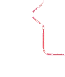
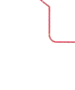
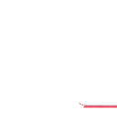
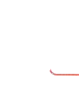
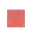

很忙。你也很
忙吗？
很想你。
生词New WordsНовые слова
Wang Yixue: Hi, Yifei!
Wang Yifei: Sister!
Wang Yixue: Are you still busy with work?
Wang Yifei: Yes, I'm still very busy. Are you busy too?
Wang Yixue: I'm not too busy. We miss you a lot.
Wang Yifei: I miss you all too.
Ван Исюэ: Привет, Ифэй!
Ван Ифэй: Сестра!
Ван Исюэ: Ты всё ещё занята работой?
Ван Ифэй: Да, я всё ещё очень занята. Ты тоже занята?
Ван Исюэ: Я не слишком занята. Мы по тебе очень скучаем.
Ван Ифэй: Я тоже по вам всем скучаю.
分角色朗读对话。Role-play the dialogue.Разыграйте диалог по ролям.
3用“吗”的是非问句Yes-No Question with “吗”Вопрос «да/нет» с “吗”
“吗”是语气助词， 通常在句子末尾， 表示疑问。基本结构： ……吗？The word “吗” is a modal particle typically placed at the end of a sentence to indicate a yes-no question with “吗”. Basic structure: ……吗?Слово “吗” — это модальная частица, обычно ставится в конце предложения для обозначения вопроса. Основная структура: ……吗?
014